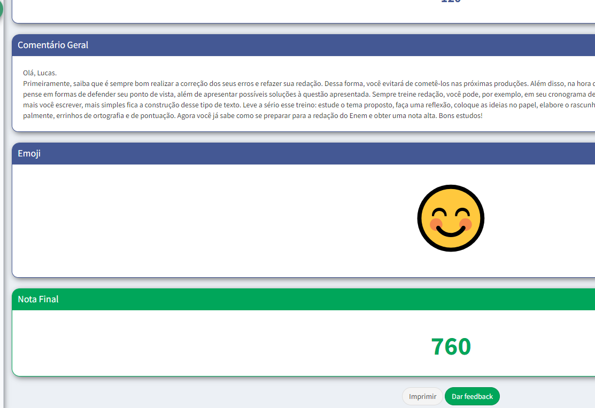
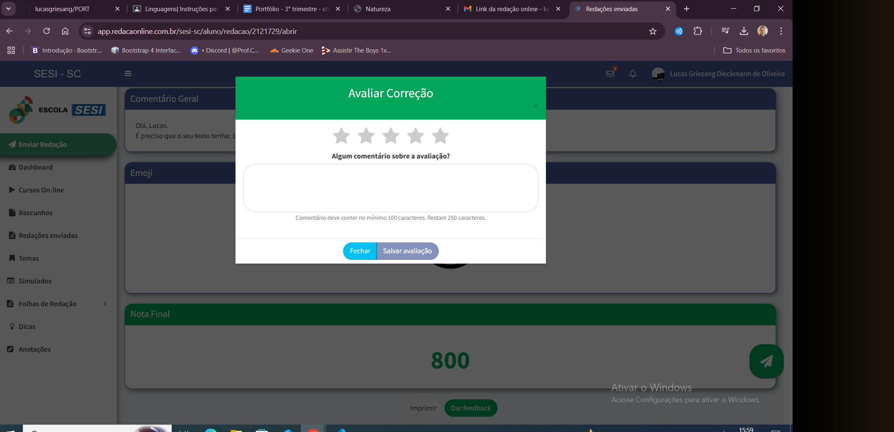
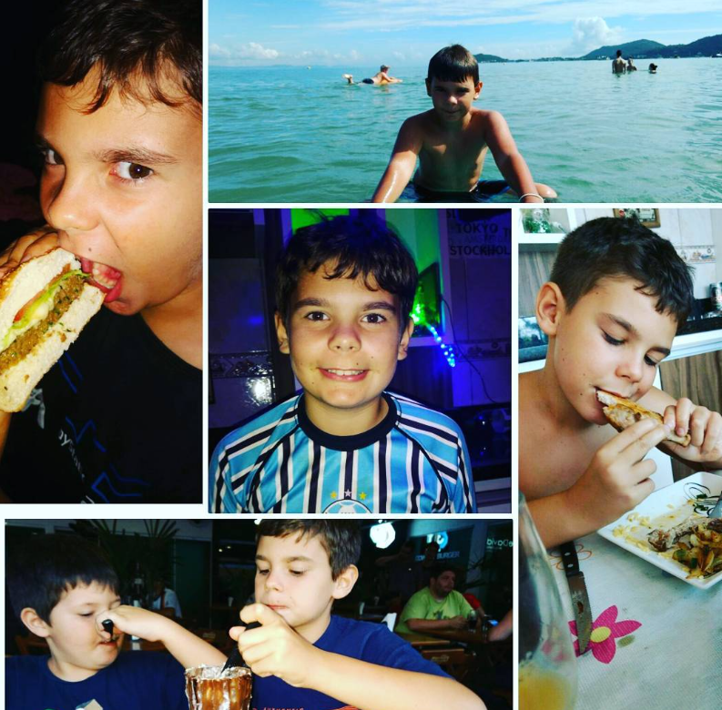
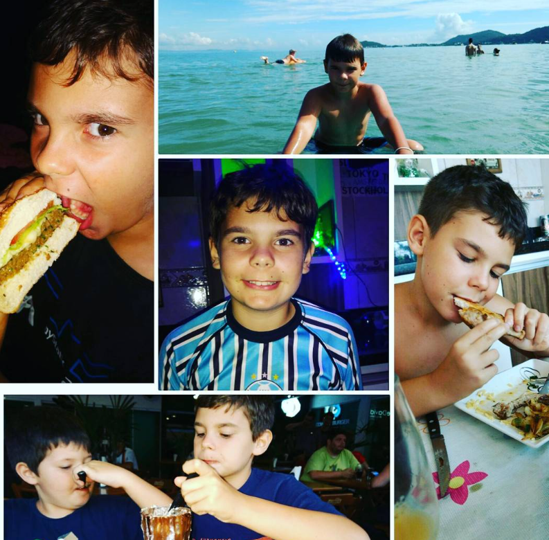

Trimestre 1
LINGUAGENS - 09.02 - Autorretrato e Produção Textual
Autorretrato e Produção Textua
LINGUAGENS - 21/02 - Apresentação Projeto "Revista Literária"
Essa atividade esta em construçãoAtividade Simple Past: Verb to be , Regular and Irregular Verbs (affirmative, interrogative and negative forms) - Post com minicontos em inglês
Atividade Simple Past: Verb to be
Atividade Pré-modernismo - Slides com a explanação da obra feita em sala de aula
Modernismo e Produção Textual
Trimestre 2
Linguagens| 05.07 - Redação Online Avaliativa

Andava na rua feliz e alegre e recebi uma fofoca que logo me assustou Recebi uma fofoca de dois apaixonados mas mal sabia que os dois estavam ferrados A filha da moço que limpava se apaixonou pelo porteiro e logo em seguida tiveram um companheiro Não sabia se era verdade já que quem me contou não falava muitas verdades He walked down the street happy and cheerful and I received a piece of gossip that immediately scared me I received a piece of gossip from two lovers but little did I know that they were both screwed The cleaner's daughter fell in love with the doorman and soon had a partner I didn't know if it was true since the person who told me didn't tell many truths
Trimestre 3
Linguagens| 18/10 - 3º Aplicação do Redação Online Avaliativa

redacao online = ia criando maos
Linguagens| 18/10 - 3º Aplicação do Redação Online Avaliativa
Revista literaria

Revista literaria
